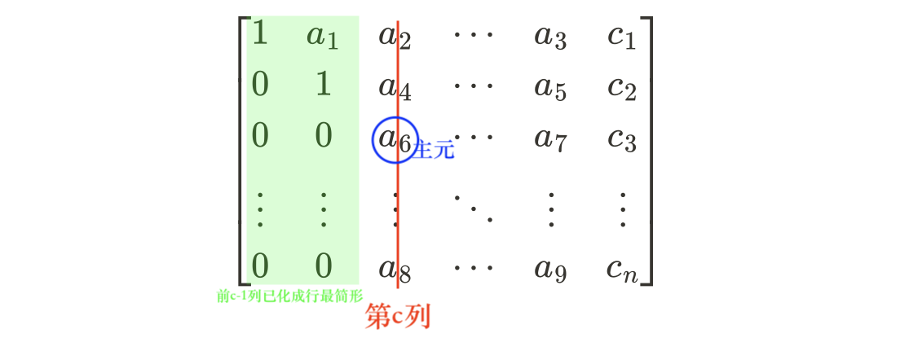
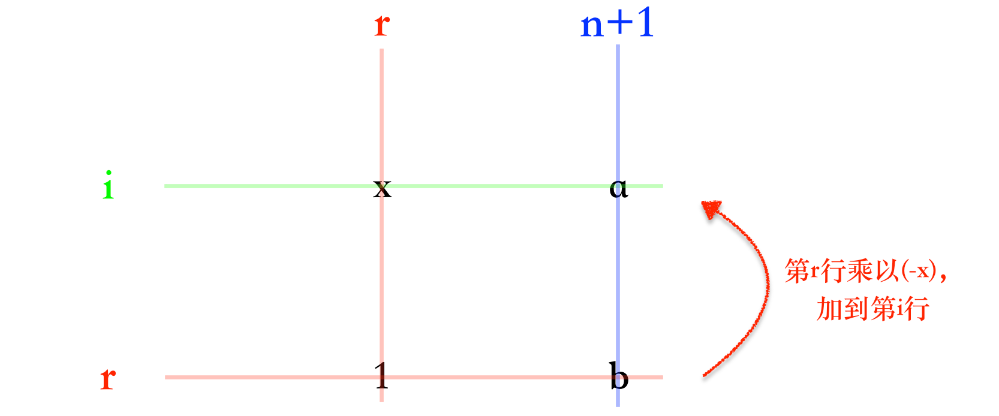

高斯消元法
高斯消元法可以以 \(O(n^3)\) 求解 \(n\) 个 \(n\) 元方程构成的线性方程组。
\[
\left\{
\begin{matrix}
a_{11}x_1+a_{12}x_2+\cdots+a_{1n}x_n=b_1 \\
a_{21}x_1+a_{22}x_2+\cdots+a_{2n}x_n=b_2 \\
\vdots\\
a_{n1}x_1+a_{n2}x_2+\cdots+a_{nn}x_n=b_n \\
\end{matrix}
\right.
\]
解的情况有 3 种：无解、有唯一解、有无穷多解。
算法步骤：
-
先将增广矩阵变换为行最简形：
\[
\begin{bmatrix}
1&a_1&a_2&\cdots &a_3&c_1\\
0&1&a_4&\cdots &a_5&c_2\\
0&0&1&\cdots &a_6&c_3\\
\vdots &\vdots &\vdots &\ddots &\vdots &\vdots \\
0&0&0&\cdots &1&c_n\\
\end{bmatrix}
\]
此时根据行最简形矩阵的形式就可以判断出方程组解的情况。
-
再变换为标准形：（为了求出方程组的解）
\[
\begin{bmatrix}
1&0&0&\cdots &0&d_1\\
0&1&0&\cdots &0&d_2\\
0&0&1&\cdots &0&d_3\\
\vdots &\vdots &\vdots &\ddots &\vdots &\vdots \\
0&0&0&\cdots &1&d_n\\
\end{bmatrix}
\]
可得方程组的解为：
\[
\left\{
\begin{matrix}
x_1=d_1 \\
x_2=d_2 \\
\vdots\\
x_n=d_n \\
\end{matrix}
\right.
\]
更具体的：
-
依次枚举每一列，当枚举到第 \(c\) 列时，第 \(1\sim c-1\) 列已变换为行最简形

-
找到 \(A[c\sim n][c]\) 中绝对值最大的元素所在的行 \(t\)
-
将第 \(t\) 行与第 \(c\) 行交换 （减小误差）
-
将第 \(c\) 行所有元素乘以一个系数，使主元变为 \(1\)
-
将矩阵的 \(c+1\sim n\) 行中每行都进行变换，使主元下方的元素均为 \(0\)
-
枚举完后，矩阵转化为行最简形矩阵
-
将矩阵转化为标准形

-
此时方程组的解即最后一列：\(A[1\sim n][n+1]\)
| double a[N][N]; // 存储增广矩阵
int gauss()
{
int row = 1; // 记录当前处理的行（即将化为行最简形）
for (int col = 1; col <= n; col++) // 枚举 **系数矩阵** 的每一列
{
int t = row;
for (int i = row; i <= n; i++) // 找绝对值最大的主元
if (fabs(a[i][col]) > fabs(a[t][col])) t = i;
if (fabs(a[t][col]) < eps) continue; // 若该列全为0，则跳过该列 （此时已经可以判断出方程组没有唯一解，至于究竟是无解还是无穷多解，还需继续往下分析）
for (int j = col; j <= n + 1; j++) swap(a[t][j], a[row][j]); // 将该行与第row行进行交换 （前面都是0）
double tmp = a[row][col];
for (int j = col; j <= n + 1; j++) a[row][j] /= tmp; // 将主元变成1
for (int i = row + 1; i <= n; i++) // 将主元下方的元素都化成0
if (fabs(a[i][col]) > eps)
{
tmp = a[i][col];
for (int j = col; j <= n + 1; j++) a[i][j] -= a[row][j] * tmp;
}
row++;
}
if (row < n + 1) // 说明系数矩阵中存在某行全为0，此时row指向的就是首个系数矩阵中全为0的行
{
for (int i = row; i <= n; i++)
if (fabs(a[i][n + 1]) > eps) return INCONSISTENT; // 存在非零项，无解
return DEPENDENT; // 有无穷多组解
}
// 转化为标准形
for (int r = n; r >= 2; r--)
for (int i = r - 1; i >= 1; i--) // 将上方的元素都化成0
{
a[i][n + 1] -= a[r][n + 1] * a[i][r];
a[i][r] = 0;
}
return INDEPENDENT; // 有唯一解
}
|
输出结果：
| for (int i = 1; i <= n; i++)
{
for (int j = 1; j <= n + 1; j++)
{
if (fabs(a[i][j]) < eps) a[i][j] = 0; // 将-0转化为0
printf("%.2lf ", a[i][j]);
}
puts("");
}
|
完整代码
| #include <iostream>
#include <cmath>
#define INDEPENDENT 0 // 有唯一解
#define DEPENDENT 1 // 无穷多解
#define INCONSISTENT 2 // 无解
using namespace std;
const double eps = 1e-8;
const int N = 110;
double a[N][N]; // 存储增广矩阵
int n;
int gauss()
{
int row = 1;
for (int col = 1; col <= n; col++) // 枚举 **系数矩阵** 的每一列
{
int t = row;
for (int i = row; i <= n; i++) // 找到最大主元
if (fabs(a[i][col]) > fabs(a[t][col])) t = i;
if (fabs(a[t][col]) < eps) continue;
for (int j = col; j <= n + 1; j++) swap(a[t][j], a[row][j]); // 交换行
double tmp = a[row][col];
for (int j = col; j <= n + 1; j++) a[row][j] /= tmp; // 将主元化成1
for (int i = row + 1; i <= n; i++) // 将主元下方元素化为0
if (fabs(a[i][col]) > eps)
{
tmp = a[i][col];
for (int j = col; j <= n + 1; j++) a[i][j] -= a[row][j] * tmp;
}
row++;
}
if (row < n + 1) // 没有唯一解
{
for (int i = row; i <= n; i++)
if (fabs(a[i][n + 1]) > eps) return INCONSISTENT; // 无解
return DEPENDENT; // 无穷多解
}
else // 有唯一解
{
// 化成标准形
for (int r = n; r >= 2; r--)
for (int i = r - 1; i >= 1; i--) // 将主元上方元素化为0
{
a[i][n + 1] -= a[r][n + 1] * a[i][r];
a[i][r] = 0;
}
return INDEPENDENT;
}
}
int main()
{
cin >> n;
for (int i = 1; i <= n; i++)
for (int j = 1; j <= n + 1; j++)
cin >> a[i][j];
int t = gauss();
if (t == INCONSISTENT) puts("No solution");
else if (t == DEPENDENT) puts("Infinite group solutions");
else
{
for (int i = 1; i <= n; i++)
{
if (fabs(a[i][n + 1]) < eps) a[i][n + 1] = 0; // 将-0转化为0
printf("%.2lf\n", a[i][n + 1]);
}
}
return 0;
}
|